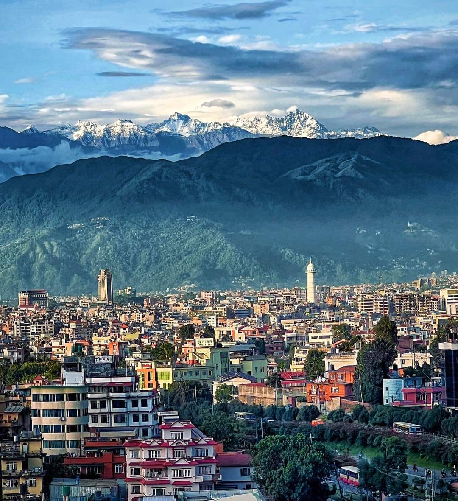
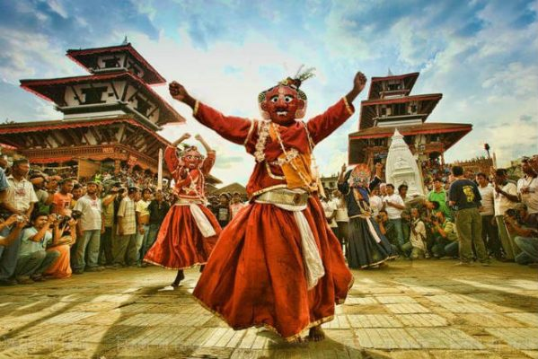

History of Nepal's Culture & Society
Where tradition meets history.
~Ancient Roots of Society
Nepal’s early dynasties—Kirats, Lichhavis, and Mallas—played a vital role in shaping its art, traditions, and festivals. The Kirats introduced nature-based rituals and community practices. The Lichhavis enriched the culture with stone inscriptions, temples, and religious harmony. The Mallas brought festivals, music, and exquisite architecture, leaving a lasting cultural legacy in the Kathmandu Valley.
~Kirats
The Kirats were among the earliest known rulers of Nepal, believed to have reigned around 8th century B.C. to 1st century A.D. They were nature worshippers and introduced simple lifestyles, hunting, and farming practices. Their culture emphasized animism, ancestor worship, and rituals connected with forests and rivers, which influenced many indigenous traditions of Nepal that still exist today.
~Lichhavis
The Lichhavi period (around 4th–9th century A.D.) is often considered a golden era in Nepalese history. They brought stability, prosperity, and remarkable cultural achievements. The Lichhavis introduced inscriptions, sculptures, and stone art, while also developing pagoda-style temples and monuments. Religious tolerance between Hinduism and Buddhism flourished under their rule, leaving a long-lasting mark on Nepalese society.
~Mallas
The Mallas ruled Nepal from the 12th to 18th century A.D. and are remembered for their extraordinary contributions to art, architecture, and culture. They built the magnificent Durbar Squares of Kathmandu, Patan, and Bhaktapur, adorned with temples and palaces. Festivals like Indra Jatra and Gai Jatra were popularized during their reign, along with music, dance, and traditional theatre. Their legacy still defines much of the Kathmandu Valley’s cultural identity.
~Malla Period (Medieval Nepal)
The Malla period (12th–18th century) was a golden age of culture and creativity in Nepal. The Malla kings built the grand Durbar Squares of Kathmandu, Patan, and Bhaktapur, showcasing intricate palaces, temples, and courtyards that remain UNESCO heritage sites today. Festivals like Indra Jatra, Gai Jatra, and Kumari Jatra flourished under their patronage, strengthening social harmony. The era also saw the growth of classical music, devotional bhajans, and traditional dances such as masked performances. Art and architecture reached their peak with wood carvings, metal sculptures, and pagoda temples, leaving behind a cultural legacy that still defines Nepal’s identity.
~Quick Highlights of the Malla Period
- Architecture: Built the famous Durbar Squares of Kathmandu, Patan, and Bhaktapur.
- Festivals: Popularized Indra Jatra, Gai Jatra, and Kumari Jatra.
- Music & Dance: Developed classical music, bhajans, and traditional masked dances.
- Art: Masterpieces in wood carvings, metal sculptures, and pagoda temples.
~Unification & Shah Period
The Shah Period began with King Prithvi Narayan Shah in the mid-18th century, who successfully unified many small kingdoms into one nation—modern Nepal. His vision, “Nepal as a garden of four castes and thirty-six ethnic groups,” highlighted unity in diversity, where different traditions, languages, and festivals coexisted. The Shah rulers encouraged cultural exchange among regions, spreading practices like Dashain and Tihar across the country. While the social system was influenced by Hindu traditions, local ethnic customs also thrived, enriching Nepal’s identity. The unification laid the foundation for a shared national culture, where diverse communities celebrated both unity and heritage.
~Quick Highlights of the Shah Period
- Unification: Prithvi Narayan Shah united various small kingdoms into modern Nepal.
- Festivals: Dashain, Tihar, and other regional festivals spread widely across the country.
- Cultural Diversity: Promoted harmony among 36+ ethnic groups and multiple languages.
- Social System: Integrated local customs with Hindu traditions, creating a shared national identity.
~Modern Nepal & Society
Modern Nepal has undergone significant social evolution through the Rana regime, the democratic movement, and the establishment of the republic. During these periods, education expanded, literacy rates increased, and literature flourished, reflecting both traditional values and modern ideas. Festivals and cultural practices adapted to urban life while retaining their traditional essence. Social reforms encouraged equality and inclusion, gradually bridging gaps between communities. Today, Nepalese society balances heritage and modernity, with citizens celebrating centuries-old festivals alongside contemporary cultural expressions, highlighting the dynamic evolution of traditions, arts, and social systems.
~Quick Highlights of Modern Nepal & Society
- Education: Expansion of schools, literacy, and modern learning.
- Festivals: Traditional festivals like Dashain and Tihar continue, blending with urban celebrations.
- Literature: Growth of Nepali literature, newspapers, and contemporary writing.
- Social Change: Reforms promoting equality, inclusion, and modernization of social practices.
~Heritage & Culture Highlights

Lumbini
Significance: Birthplace of Lord Buddha.
Impact: Spiritual center attracting pilgrims and shaping Nepal’s historical identity.

Kathmandu Valley
Significance: Political and cultural hub.
Impact: Unique blend of Hinduism and Buddhism in architecture, festivals, and lifestyle./p>

Temples & Stupas
Significance: Religious landmarks across Nepal.
Impact: Centers of worship, festivals, and social gatherings.

Folk Traditions
Significance: Music, dance, and oral storytelling.
Impact: Preserves history and daily life, passing culture through generations.